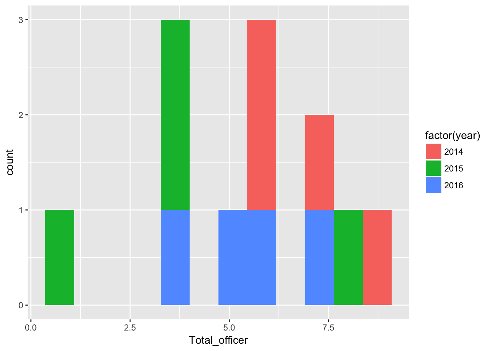
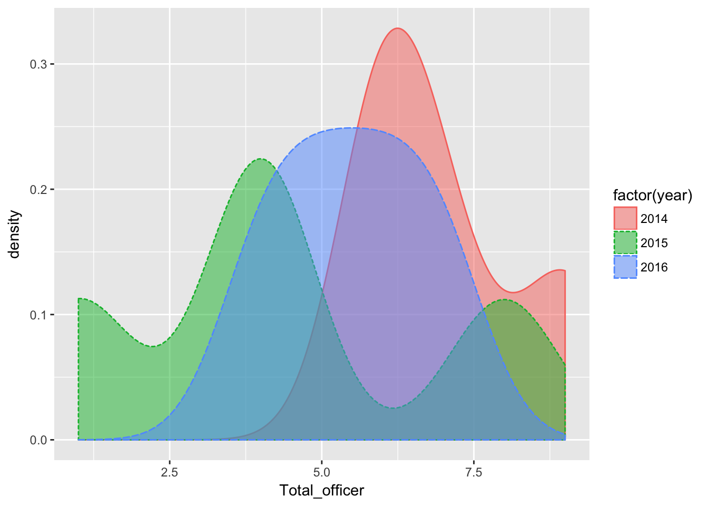
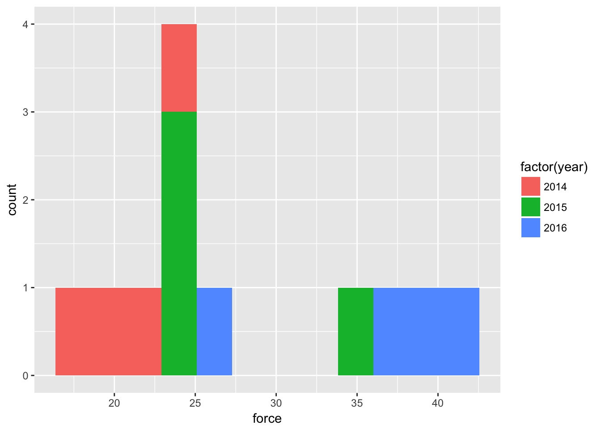
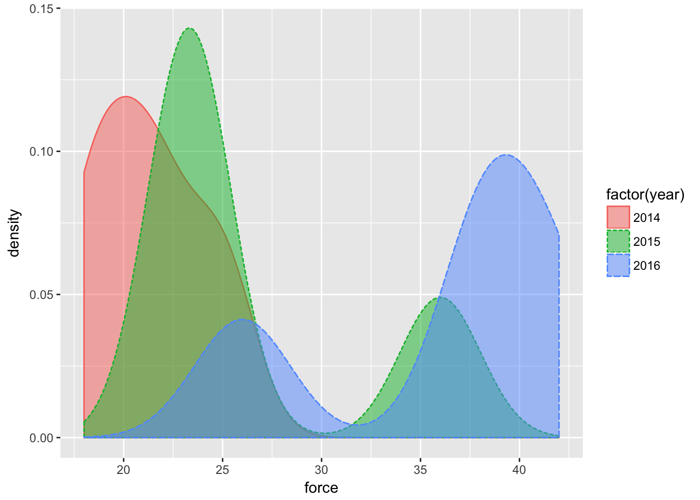
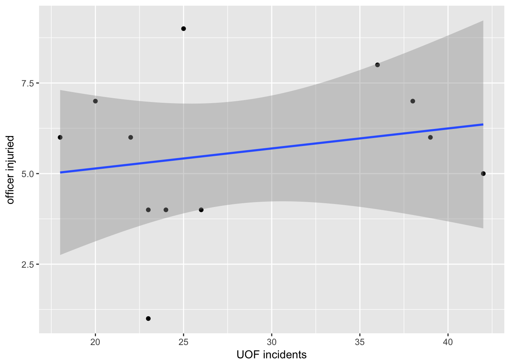
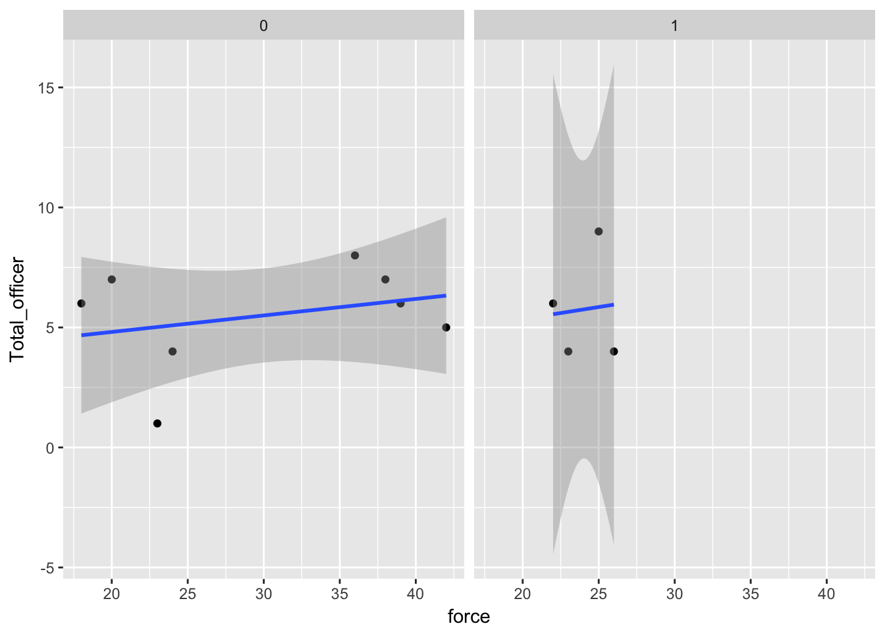
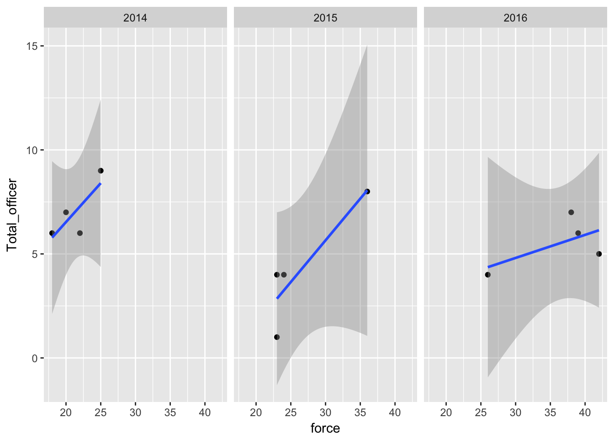
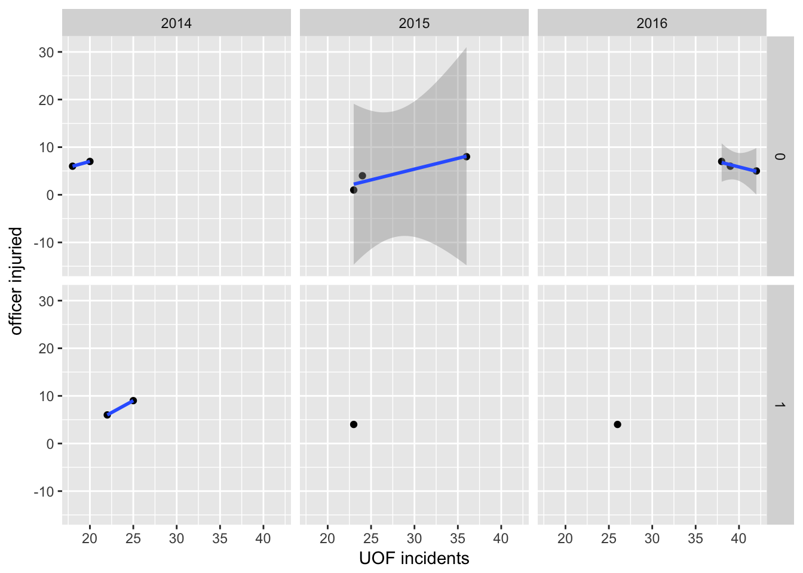
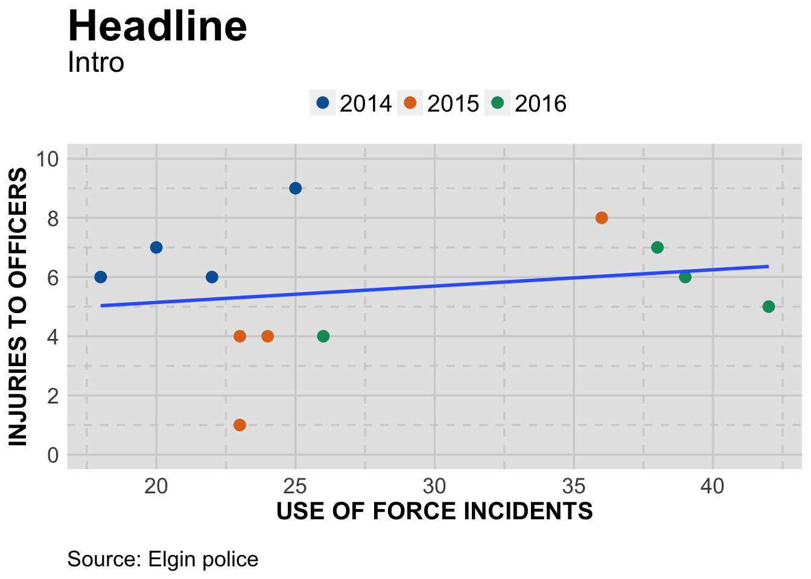

Scatterplots are very useful for seeing if there’s a relation between two sets of data.
With this tutorial, we’re going to start from scratch with our data and use qplot to explore the data we have and then create a publication-ready graphic to present what we found.
Let’s start by loading in the libraries and data we want to use.
# load the libraries
library(readr)
library(ggplot2)
library(ggthemes)
# load in the data we want to explore
df <- read_csv("ElginUOF.csv")## Parsed with column specification:
## cols(
## .default = col_integer(),
## Year_Quarter = col_character()
## )## See spec(...) for full column specifications.Now, let’s use summary() to get an idea of the data. But let’s go a step further and store the result of summary() in a dataframe so we can refer to it anytime we want.
dfsum <- data.frame(unclass(summary(df)), check.names = FALSE, stringsAsFactors = FALSE)
dfsum## Year_Quarter Total_CFS Total_arrests Total_RTR_incidents
## 1 Length:12 Min. :18178 Min. : 889.0 Min. :25.00
## 2 Class :character 1st Qu.:19663 1st Qu.: 947.8 1st Qu.:32.00
## 3 Mode :character Median :21544 Median : 994.5 Median :35.50
## 4 <NA> Mean :21341 Mean :1013.2 Mean :39.67
## 5 <NA> 3rd Qu.:22753 3rd Qu.:1046.2 3rd Qu.:50.50
## 6 <NA> Max. :24715 Max. :1246.0 Max. :56.00
## SOF_only UOF_only Total_transitions Handgun_drawn_NP
## 1 Min. : 6.00 Min. :15.00 Min. : 2.000 Min. :0.000
## 2 1st Qu.: 9.75 1st Qu.:16.00 1st Qu.: 3.000 1st Qu.:1.000
## 3 Median :12.00 Median :19.50 Median : 6.500 Median :3.000
## 4 Mean :11.67 Mean :21.92 Mean : 6.083 Mean :3.417
## 5 3rd Qu.:13.25 3rd Qu.:25.75 3rd Qu.: 8.000 3rd Qu.:5.250
## 6 Max. :19.00 Max. :35.00 Max. :12.000 Max. :8.000
## Handgun_pointed Handgun_discharged Total_handgun Traser_drawn_NP
## 1 Min. : 2.000 Min. :0 Min. : 4.00 Min. :0.000
## 2 1st Qu.: 3.750 1st Qu.:0 1st Qu.: 7.00 1st Qu.:1.000
## 3 Median : 6.500 Median :0 Median : 9.50 Median :2.000
## 4 Mean : 6.667 Mean :0 Mean :10.08 Mean :2.083
## 5 3rd Qu.: 9.250 3rd Qu.:0 3rd Qu.:13.50 3rd Qu.:3.000
## 6 Max. :12.000 Max. :0 Max. :18.00 Max. :6.000
## Taser_pointed Taser_fired Total_taser Officer_noInjuries
## 1 Min. : 2.000 Min. :1.000 Min. : 5.00 Min. :19.00
## 2 1st Qu.: 3.750 1st Qu.:2.750 1st Qu.: 8.00 1st Qu.:26.50
## 3 Median : 6.000 Median :4.500 Median :13.00 Median :32.00
## 4 Mean : 7.083 Mean :4.667 Mean :13.83 Mean :34.08
## 5 3rd Qu.: 9.250 3rd Qu.:6.500 3rd Qu.:19.50 3rd Qu.:43.75
## 6 Max. :16.000 Max. :9.000 Max. :27.00 Max. :51.00
## Officer_minor Officer_mayor Total_officer Suspect_noInjuries
## 1 Min. :1.00 Min. :0.0000 Min. :1.000 Min. :18.00
## 2 1st Qu.:3.75 1st Qu.:0.0000 1st Qu.:4.000 1st Qu.:25.00
## 3 Median :5.50 Median :0.0000 Median :6.000 Median :28.50
## 4 Mean :5.25 Mean :0.3333 Mean :5.583 Mean :32.42
## 5 3rd Qu.:7.00 3rd Qu.:1.0000 3rd Qu.:7.000 3rd Qu.:42.00
## 6 Max. :8.00 Max. :1.0000 Max. :9.000 Max. :47.00
## Suspect_minor Suspect_major Total_suspect
## 1 Min. : 3.000 Min. :0.0000 Min. : 3.00
## 2 1st Qu.: 4.750 1st Qu.:0.0000 1st Qu.: 4.75
## 3 Median : 7.500 Median :0.0000 Median : 7.50
## 4 Mean : 7.083 Mean :0.1667 Mean : 7.25
## 5 3rd Qu.: 8.000 3rd Qu.:0.0000 3rd Qu.: 8.25
## 6 Max. :14.000 Max. :1.0000 Max. :14.00Now we can click on dfsum in the environment window of R studio and view the results as a dataframe. All the code that made dfsum is the kind of thing that we know works but that we don’t have to spend a lot of time understanding why it works. That can come later.
What we’re looking at is three years of data, by quarter, showing how many times officers had to use physical force to restrain suspects, how many times they used a taser or gun and how many times an officer or suspect was injured
This isn’t a big dataset - there are very few rows and columns But that means it’s also easy to understand what we’re seeing. When you start working with data that has 100s of rows and columns these same techniques are going to be vital to understanding what you have.
Right off the bat, I can see I need to create a column that only has years and not years + quarters. As long as I’m at it, I’ll store a sort order in another column.
I don’t know if I’m going to use these, but from experience I know this is the step where I would create them.
df <-df[order(df$Year_Quarter),]
df$sort <- seq.int(nrow(df)) The first command sorts the dataframe by the Year_Quarter column, while the second command creates a column called “sort” and stores the row number in it.
Now we’re going to get a little tricky. We have a column - Year_Quarter - that we want to grab information from. Luckily, the information in that column is formatted the same way: YYYY QQ, where YYYY = the year and QQ equals the quarter. With a space, that’s seven characters in the column.
So we can use the “substr” command to select what we want.
# grab the year
df$year <- as.numeric(as.character( substr(df$Year_Quarter, start=1, stop=4) ))
# grab the quarter
df$quarter <- substr(df$Year_Quarter, start=6, stop=7)The first command selects the first four characters and stores them as a number (as.numeric(as.character) in a column called “year.” The second line selects the last two characters and stores them in “quarter.” We don’t need to specify a data type since it’s already considered a character.
We’ve done some work with the dataframe - let’s update dfsum. We’ll simply run the command we did before and overwrite what we did previously.
dfsum <- data.frame(unclass(summary(df)), check.names = FALSE, stringsAsFactors = FALSE)
dfsum## Year_Quarter Total_CFS Total_arrests Total_RTR_incidents
## 1 Length:12 Min. :18178 Min. : 889.0 Min. :25.00
## 2 Class :character 1st Qu.:19663 1st Qu.: 947.8 1st Qu.:32.00
## 3 Mode :character Median :21544 Median : 994.5 Median :35.50
## 4 <NA> Mean :21341 Mean :1013.2 Mean :39.67
## 5 <NA> 3rd Qu.:22753 3rd Qu.:1046.2 3rd Qu.:50.50
## 6 <NA> Max. :24715 Max. :1246.0 Max. :56.00
## SOF_only UOF_only Total_transitions Handgun_drawn_NP
## 1 Min. : 6.00 Min. :15.00 Min. : 2.000 Min. :0.000
## 2 1st Qu.: 9.75 1st Qu.:16.00 1st Qu.: 3.000 1st Qu.:1.000
## 3 Median :12.00 Median :19.50 Median : 6.500 Median :3.000
## 4 Mean :11.67 Mean :21.92 Mean : 6.083 Mean :3.417
## 5 3rd Qu.:13.25 3rd Qu.:25.75 3rd Qu.: 8.000 3rd Qu.:5.250
## 6 Max. :19.00 Max. :35.00 Max. :12.000 Max. :8.000
## Handgun_pointed Handgun_discharged Total_handgun Traser_drawn_NP
## 1 Min. : 2.000 Min. :0 Min. : 4.00 Min. :0.000
## 2 1st Qu.: 3.750 1st Qu.:0 1st Qu.: 7.00 1st Qu.:1.000
## 3 Median : 6.500 Median :0 Median : 9.50 Median :2.000
## 4 Mean : 6.667 Mean :0 Mean :10.08 Mean :2.083
## 5 3rd Qu.: 9.250 3rd Qu.:0 3rd Qu.:13.50 3rd Qu.:3.000
## 6 Max. :12.000 Max. :0 Max. :18.00 Max. :6.000
## Taser_pointed Taser_fired Total_taser Officer_noInjuries
## 1 Min. : 2.000 Min. :1.000 Min. : 5.00 Min. :19.00
## 2 1st Qu.: 3.750 1st Qu.:2.750 1st Qu.: 8.00 1st Qu.:26.50
## 3 Median : 6.000 Median :4.500 Median :13.00 Median :32.00
## 4 Mean : 7.083 Mean :4.667 Mean :13.83 Mean :34.08
## 5 3rd Qu.: 9.250 3rd Qu.:6.500 3rd Qu.:19.50 3rd Qu.:43.75
## 6 Max. :16.000 Max. :9.000 Max. :27.00 Max. :51.00
## Officer_minor Officer_mayor Total_officer Suspect_noInjuries
## 1 Min. :1.00 Min. :0.0000 Min. :1.000 Min. :18.00
## 2 1st Qu.:3.75 1st Qu.:0.0000 1st Qu.:4.000 1st Qu.:25.00
## 3 Median :5.50 Median :0.0000 Median :6.000 Median :28.50
## 4 Mean :5.25 Mean :0.3333 Mean :5.583 Mean :32.42
## 5 3rd Qu.:7.00 3rd Qu.:1.0000 3rd Qu.:7.000 3rd Qu.:42.00
## 6 Max. :8.00 Max. :1.0000 Max. :9.000 Max. :47.00
## Suspect_minor Suspect_major Total_suspect sort
## 1 Min. : 3.000 Min. :0.0000 Min. : 3.00 Min. : 1.00
## 2 1st Qu.: 4.750 1st Qu.:0.0000 1st Qu.: 4.75 1st Qu.: 3.75
## 3 Median : 7.500 Median :0.0000 Median : 7.50 Median : 6.50
## 4 Mean : 7.083 Mean :0.1667 Mean : 7.25 Mean : 6.50
## 5 3rd Qu.: 8.000 3rd Qu.:0.0000 3rd Qu.: 8.25 3rd Qu.: 9.25
## 6 Max. :14.000 Max. :1.0000 Max. :14.00 Max. :12.00
## year quarter
## 1 Min. :2014 Length:12
## 2 1st Qu.:2014 Class :character
## 3 Median :2015 Mode :character
## 4 Mean :2015 <NA>
## 5 3rd Qu.:2016 <NA>
## 6 Max. :2016 <NA>There are some interesting columns in there. Let’s look at one question: As use of physical force increased, do injuries for officers or suspects also increase?
To answer that, we need to create a column that sums the RTR instances that involve use of force. For Response to resistance, we have
show of force only, which is some kind of warning that physical force will be used
use of force only, which is an officer using physical restraining technique like a hold, in response to resistance
and transition, which includes both showing and using force
To account for all instances where force was used, we need to add up transition and use of force and put that into a new column we’ll call “force.”
df$force <- df$UOF_only + df$Total_transitionsThat’s easy. What’s great about R is how it assumes you want the value in UOF_only row 2 to be added to the value of Total_transitions row 2 and so on.
Now let’s select the columns we want to work with and store them in a new dataframe called “dfLook.”
dfLook <- subset(df, select = c("year","Year_Quarter","force","Total_officer","Total_suspect"))Good, but there’s something we didn’t consider: officer and suspect injuries consist of major and minor injuries. Let’s add major injuries to our new dataframe.
Then let’s save it so we don’t have to recreate the wheel each time.
dfLook$Officer_major <- df$Officer_mayor
dfLook$Suspect_major <- df$Suspect_major
write_csv(dfLook,"dfLook.csv")We can do this because we didn’t change the order of the rows at an point. If we had sorted dfLook in a different way then the columns we added wouldn’t be matched to the right row.
Let’s take a look at the new dataframe.
summary(dfLook)## year Year_Quarter force Total_officer
## Min. :2014 Length:12 Min. :18.00 Min. :1.000
## 1st Qu.:2014 Class :character 1st Qu.:22.75 1st Qu.:4.000
## Median :2015 Mode :character Median :24.50 Median :6.000
## Mean :2015 Mean :28.00 Mean :5.583
## 3rd Qu.:2016 3rd Qu.:36.50 3rd Qu.:7.000
## Max. :2016 Max. :42.00 Max. :9.000
## Total_suspect Officer_major Suspect_major
## Min. : 3.00 Min. :0.0000 Min. :0.0000
## 1st Qu.: 4.75 1st Qu.:0.0000 1st Qu.:0.0000
## Median : 7.50 Median :0.0000 Median :0.0000
## Mean : 7.25 Mean :0.3333 Mean :0.1667
## 3rd Qu.: 8.25 3rd Qu.:1.0000 3rd Qu.:0.0000
## Max. :14.00 Max. :1.0000 Max. :1.0000Right away we can see there’s more injuries to suspects than officers, but for officers there are slightly more major injuries.
Let’s focus on officers.
qplot(Total_officer,
data=dfLook,
fill=factor(year),
bins = 12
)
There were more quarters with higher numbers of officer injuries in 2014 than in subsequent years.
Here’s how that looks with a density plot
qplot(Total_officer, data=dfLook,
geom="density",
fill=factor(year),
color=factor(year),
linetype = factor(year),
alpha=I(.5)
)
How about all incidents where force was used
qplot(force,
data=dfLook,
fill=factor(year),
bins = 12
)
Clearly more quarters with higher numbers of use-of-force in 2016 than previous years. With density:
qplot(force, data=dfLook,
geom="density",
fill=factor(year),
color=factor(year),
linetype = factor(year),
alpha=I(.5)
)
It doesn’t appear that there will be much of a correlation between incidents where force was used and injuries to officers.
Let’s compare force and officer injuries with a scatter plot.
qplot(force,Total_officer,
data=dfLook,
xlab="UOF incidents",
ylab="officer injuried") +
stat_smooth(method="lm")
There does seem to be a slight rise to the trend line.
The dark area associated with the trend line is the 95% confidence interval. That’s a prediction that if more data was added, 95% of the time it would fall within that area. As you can see, the area is pretty wide so there’s not a lot of use in that prediction.
Let’s take a closer look at the number behind that trend line.
fit_officer <- lm(force ~ Total_officer, data = dfLook)
summary(fit_officer)##
## Call:
## lm(formula = force ~ Total_officer, data = dfLook)
##
## Residuals:
## Min 1Q Median 3Q Max
## -10.344 -5.950 -1.957 6.713 14.481
##
## Coefficients:
## Estimate Std. Error t value Pr(>|t|)
## (Intercept) 23.3944 7.1031 3.294 0.0081 **
## Total_officer 0.8249 1.1936 0.691 0.5052
## ---
## Signif. codes: 0 '***' 0.001 '**' 0.01 '*' 0.05 '.' 0.1 ' ' 1
##
## Residual standard error: 8.517 on 10 degrees of freedom
## Multiple R-squared: 0.04559, Adjusted R-squared: -0.04986
## F-statistic: 0.4776 on 1 and 10 DF, p-value: 0.5052Lots to uppack here. Honestly, I am not qualified to explain in detail these more advanced statistic measures.
What follows is a very over-simplified explanation. Look at the last set of three lines, that starts with “Residual standard error.”
Generally, you want your Adjusted R-square to be as close to 1.00 as possible. Here it’s -0.04986. Negative numbers are fine. But it’s not very close to 1.00. Only about 4.9 percent of the observations can be explained by the relationship between the two data sets. So not much of a relationship.
The p-value should be less that 0.05. Here it’s well over: 0.5052.
HOWEVER: Don’t expect too much out of these stats - we’re using a very small dataset so it’s not going to be very informative and may even cause confusing results. Look at the portion labeled Coefficients:
Std. Error and t value. You want the t values to be as large as possible versus the std errors. Neither are. This is kind of like margin of error. If, for instance, a poll says two candidates are at 51% vs. 49% and the margin of error is five percentage points, the candidate with 49% could actually be at 54%.
The Pr(>|t|) or p-value uses those T values and Error to compute the P-value. The top one is well under 0.05 (0.0081) which is good. It has ** which denotes ( under signif.codes ) that it’s close to zero in whether the result is random versus signifcant. If it had *** it would be considered significant. But the bottom one is 0.5052 with is really bad!
Statistics is a science. Our purpose in graphing these values out is to see how the data relates to the regression line and maybe spot outliers. We will seldom use T values or R2 in our stories.
But there’s nothing wrong in knowing about these things. And in fact understanding when it’s telling you that something’s wrong can be very useful.
Here’s a link to a resource explaining what you see with the summary https://feliperego.github.io/blog/2015/10/23/Interpreting-Model-Output-In-R
We can take a deeper look at the data by pulling out aspects of it into their own charts. Let’s start with major injuries.
qplot(force,Total_officer,
data=dfLook) +
stat_smooth(method="lm") +
facet_grid(. ~ factor(Officer_major))
In terms of major injuries, there are either none in a quarter or there is one. Therefore, when we add facet_grid(. ~ factor(Officer_major) to the chart, it groups the quarters accordingly.
And with that, we can see major injuries occured when there were relatively few incidents of of force.
What can we see when we facet by year:
qplot(force,Total_officer,
data=dfLook) +
stat_smooth(method="lm") +
facet_grid(. ~ factor(year))
Three years results in three grids. In 2014 and 2015, injuries did tend to be higher when force was used most. But in 2016, the quarters where there were the most use of force incidents did not result in the highest number of injuries.
In fact, the one quarter in 2016 with the highest number of force incidents out of all three years had fewer officer injuries than any quarter in 2014.
Let’s do one more facet grid, with both years and major injuries.
qplot(force,Total_officer,
data=dfLook,
xlab="UOF incidents",
ylab="officer injuried") +
stat_smooth(method="lm") +
facet_grid(factor(Officer_major) ~ factor(year))## Warning in qt((1 - level)/2, df): NaNs produced
## Warning in qt((1 - level)/2, df): NaNs produced
The more you facet a dataset, the more you can confuse yourself. Here it’s pretty easy.
First, across the three columns, we’ve divided the data by years. Then, top and bottom rows are quarters where there were or were not major injuries. Again, there’s either zero major injuries or one. If there was a quarter with seven major injuries, we’d have three rows labeled 0, 1 and 7.
So this is pretty useful. First off, 2014 had two quarters with a major injury vs. 2015 and 2016. And these happened when there were generally fewer force incidents than in subsequent years.
But look at 2016: without the one quarter that had a major injury, there’s actually a negative, downward trend in terms of use of force vs. officer injuries. In other words, even though use of force in response to resistance was increasing, injuries to officer were going down.
Let’s create a final scatter plot to show what we found.
#---------------------
# This function set styles for the chart
# Be sure to run it before you plot
theme_gfx <- function(...) {
theme_set(theme_get() + theme(text = element_text(family = 'Verdana', size= 12, lineheight=0.9))) +
theme(
# edit background colors
plot.background = element_blank(),
legend.background = element_blank(),
panel.background=element_rect(fill="#E5E5E5"),
strip.background=element_rect(fill="#E5E5E5"),
# modify grid and tick lines
panel.grid.major = element_line(size = .6, color="#D2D2D2"),
panel.grid.minor = element_line(size = .6, color="#D2D2D2", linetype = "dashed"),
axis.ticks = element_blank(),
# edit font sizes
plot.title = element_text(size = 27,face="bold"),
plot.subtitle = element_text(size = 18),
#legend.title=element_text(size = 13,face="bold"),
legend.text=element_text(size=14.7),
axis.title=element_text(size=15, face="bold"),
axis.text=element_text(size=13.5),
plot.caption=element_text(size=13.5, hjust=0),
strip.text = element_text(face="bold", size=13.5, hjust=0),
# This puts the legend across the top
legend.position="top",
legend.direction="horizontal",
# removes label for legend
legend.title = element_blank(),
...
)
}
#-----------------
# create the plot
officer <- ggplot(dfLook) +
aes(x=force,
y=Total_officer
) +
geom_point(stat="identity",
size = 3,
shape=21,
#alpha=I(.5),
aes(
color=factor(year),
fill=factor(year) )
) +
geom_smooth(method=lm,se=FALSE) +
theme_gfx() +
scale_y_continuous(limits = c(0, 10), breaks=c(seq(0,10,2)) ) #+
#scale_x_continuous(limits = c(0, 44), breaks=c(seq(0,44,2)) )
# add all the titles.
officer <- officer +
labs(
title="Headline",
subtitle="Intro",
x="USE OF FORCE INCIDENTS",
y="INJURIES TO OFFICERS",
caption="\nSource: Elgin police")
# color scheme - comment out for B/W PDF
officer <- officer + scale_colour_manual( values = c("#0063A5", "#DE731D", "#009964", "#DA2128", "#6F2C91") ) + scale_fill_manual( values = c("#0063A5", "#DE731D", "#009964", "#DA2128", "#6F2C91") )
# make B/W PDF - remember to change name of file!
#officer <- officer + scale_colour_grey(start = 0, end = 0.75) + scale_fill_grey(start = 0, end = 0.75)
officer
By this time, you should be able to understand most of what we’ve done. A few notes:
We used factor(year) on both color and fill. Color makes the outline for the shape (21) the same color as the fill. If we had so many points that we needed to make them transparent ( with alpha=I(.5) ), the lines would still be solid while the fill would be transparent. Just a design choice.
The other thing we did is hide the confidence interval around the trendline with geom_smooth(method=lm,se=FALSE). With so few data points,the interval didn’t add much. Plus we’d have to explain it in an extensive note.
Finally, although we adjusted the y axis we did not do the same for the x axis. Does it need the zero point or is the labeling on there clear enough?
As far as what the chart shows, the intro could be something like this: In spite of officers increasing their use of hand-to-hand techniques in response to resistance, the number of officers injured has not increased at the same rate.
Using the code and data we already have, see how injuries to suspects compare to use of force incidents.